| Provide a comprehensive set of diagnostics that the community agrees is useful to characterize a climate model | |
| Provide a concise, complete summary of a model's simulation characteristics | |
| Provide an indication of the suitability of a model for a variety of applications | |
| Provide information about the simulated state and about the processes maintaining that state | |
| Include variables that modeling groups and users would like to see from their own model and from other models | |
| Allow model developers to compare their developmental model with other models and with AMIP vintage models to determine where they currently stand in the development process |
These diagnostics conceptually comprise sets of plots and averages. They are not the data base from which these are calculated, such as that developed for AMIP at PCMDI, nor are they a data base from which further diagnostics can be calculated. The exact format is left open for the moment, i.e. whether electronic, specified plot formats and contour intervals, etc. The diagnostics could form the basis of a printed technical report or WWW home page to document the simulation capabilities of a particular model version.
The list is limited to atmospheric quantities. Variables such as runoff are not included as they are conceptually controlled by another component of the climate system, namely the land surface model. Presumably similar standard diagnostic lists would be useful for the other components of the climate system.
The list will be updated from time to time in response to suggestions from the modeling community and to make it more complete. For example, diagnostics which illuminate some aspects of the climate, such as the diurnal cycle, are not yet included. Please send all comments and suggestions to David Williamson, National Center for Atmospheric Research, Box 3000, Boulder, CO 80307-3000, USA or (preferably) electronically to (wmson@ncar.ucar.edu). The list is maintained by PCMDI under the direction of the WGNE.
Diagnostics
1. GLOBAL AVERAGES (Annual)
(for model budget)
Surface Energy Budget (W/m2)
--- net solar flux at surface, positive downward
--- net longwave flux at surface, positive upward
--- surface latent heat flux, positive upward
--- surface sensible heat flux, positive upward
--- residual (solar -- longwave -- latent -- sensible)
Surface Water Budget (mm/day)
--- precipitation rate global land only
--- evaporation rate global land only
--- residual (precipitation -- evaporation)
global
land only
Net Solar Flux at top of atmosphere, positive downward (W/m2)
(Absorbed Solar Radiation)
--- all sky
--- clear sky (method II)
Net Longwave Flux at surface, positive upward (W/m2)
--- all sky
--- clear sky (method II)
Net Solar Flux at surface, positive downward (W/m2)
--- all sky
--- clear sky (method II)
Longwave Cloud Forcing (W/m2)
(net longwave clear sky flux -- net longwave all sky flux, top of atmosphere)
Shortwave Cloud Forcing (W/m2)
(net shortwave all sky flux -- net shortwave clear sky flux, top of atmosphere)
Cloud
--- fraction (total), overlap as assumed in model
Precipitation Rate (mm/day)
Evaporation Rate (mm/day)
Precipitable Water (mm)
Surface Skin Temperature (effective radiating temperature, K)
--- global
--- land only
Screen Temperature, 2 m, (K)
--- global
--- land only
Atmospheric Angular Momentum (kg m**2/s)
(vertical integral through depth of atmosphere)
Implied Meridional Ocean Freshwater Flux (kg/s)
(with non-zero annual mean, global ocean average net surface flux removed uniformly)
--- all oceans
--- Atlantic Ocean
--- Indo-Pacific Ocean
(the two basins delimited by 67.5W south of South America and 22.5E south of Africa)
Net Solar Flux at top of atmosphere, positive downward (W/m2)
(Absorbed Solar Radiation)
--- all sky
--- clear sky (method II)
Net Longwave Flux at surface, positive upward (W/m2)
--- all sky
--- clear sky (method II)
Net Solar Flux at surface, positive downward (W/m2)
--- all sky
--- clear sky (method II)
Longwave Cloud Forcing (W/m2)
(net longwave clear sky flux -- net longwave all sky flux, top of atmosphere)
Shortwave Cloud Forcing (W/m2)
(net shortwave all sky flux -- net shortwave clear sky flux, top of atmosphere)
Cloud
--- fraction (total), overlap as assumed in model
Precipitation Rate (mm/day)
Evaporation Rate (mm/day)
Precipitable Water (mm)
Surface Skin Temperature (effective radiating temperature, K)
--- global
--- land only
Screen Temperature, 2 m (K)
--- global
--- land only
Zonal Surface Stress (positive for westerly wind, N/m2)
--- ocean only
Zonal Wind (m/s)
Temperature (K)
Specific Humidity (g/kg)
Relative Humidity (percent)
Pressure Vertical Velocity, (hPa/day)
Meridional Streamfunction (kg/s)
Total Diabatic Heating (K/day)
Total Diabatic Moistening (g/kg/day)
Total Parameterized Momentum Sink, (m/s/day) --- u and v components
Meridional Eddy Fluxes
( 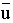 = individual seasonal mean, 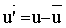)
( [ u ] = zonal average, u* = u - [u] )
--- transient
momentum ( [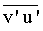], m2)/s2)
heat ( [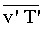], Km/s)
moisture ( [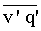], (g/kg)(m/s) )
--- stationary
momentum ( [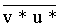], m2)/s2)
heat ( [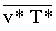 ], Km/s)
moisture ( [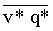], (g/kg)(m/s) )
Vertical Eddy Heat Flux
--- transient
heat ( [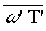], K Pa/s)
--- stationary
heat ( [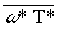], K Pa/s)
Eddy Kinetic Energy ( 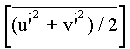 , m2)/s2)
Eddy Variances
--- height ( 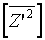, m2)
--- temperature (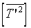, K2)
Sea--Level Pressure (hPa)
300 hPa Height Field (m)
200 hPa Zonal Wind (m/s)
200 hPa Velocity Potential (m2)/s)
200 hPa Stream Function (m2)/s)
850 hPa Temperature (K)
850 hPa Vector Winds (m/s)
Screen Temperature, 2 m, (as defined in AMIP II, K)
Surface Skin Temperature (effective radiating temperature, K)
Snow Mass (liquid water equivalent, mm)
Snow Cover (fraction)
Precipitable Water (mm)
Total Precipitation (mm/day)
Evaporation -- Precipitation (mm/day)
Latent Heat Flux (W/m2)
Sensible Heat Flux (W/m2)
Surface Stress
--- ocean only, vectors and magnitude (N/m2)
Outgoing Longwave Radiation (W/m2)
Absorbed Solar Radiation (W/m2)
Net Solar Flux at surface (W/m2)
Net Longwave Flux at surface (W/m2)
Net Surface Heat Flux (W/m2)
Longwave Cloud Forcing (W/m2)
Shortwave Cloud Forcing (W/m2)
Meridional Eddy Fluxes
(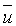 individual seasonal mean, 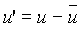)
--- 200 hPa momentum (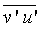, m2/s2)
--- 850 hPa heat (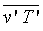, Km/s )
Vertical Heat Flux
--- 850 hPa heat (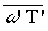, K Pa/s )
Transient Kinetic Energy
--- 850 hPa 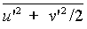, m2/s2)
Variability (intra-seasonal) (Climatological average of seasonal standard deviations) ( = individual seasonal mean, )
--- 850 hPa T (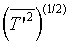, K )
--- 300 hPa Z (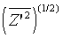, m )
--- 300 hPa band pass filtered (2-8 day) Z (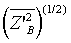, m )
--- precipitation ( 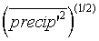, mm/day)
--- sea-level pressure (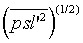, hPa)
Variability (inter-seasonal)
(Standard deviations of seasonal averages)
( = individual seasonal mean, )
(braces, {u} = climatological seasonal average)
--- 850 hPa T (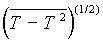, K )
--- 300 hPa Z (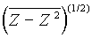, m )
--- 300 hPa band pass filtered (2-8 day) Z (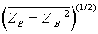, m )
--- precipitation (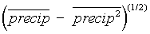, mm/day)
--- sea-level pressure (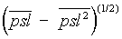, hPa)
Precipitable Water (mm)
Precipitation (mm/day)
Zonal Surface Stress (positive for westerly wind, N/m2)
--- ocean only Net Heat Flux into Ocean (W/m2)
Sea-Level Pressure (hPa)
850 hPa Temperature (K)
Screen Temperature, 2 m, (K)
UCRL-MI-127455